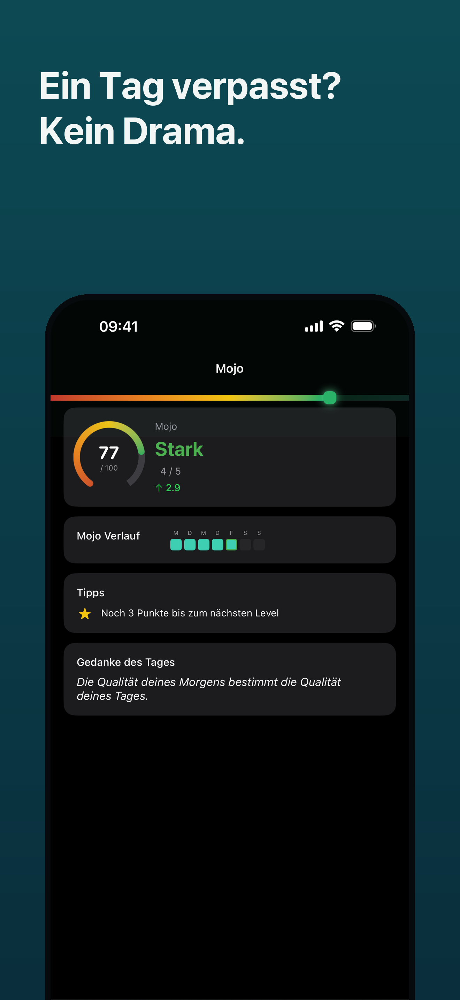
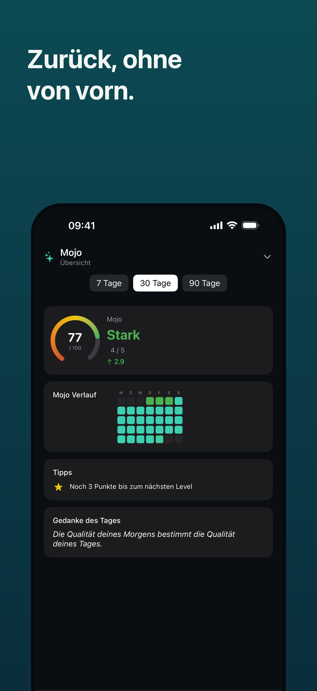
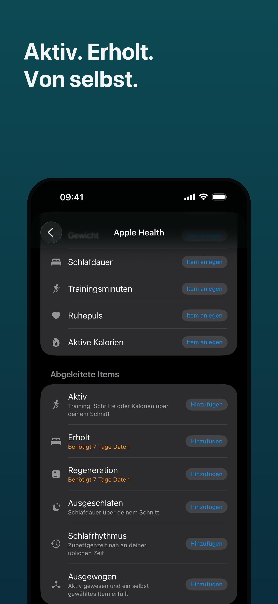
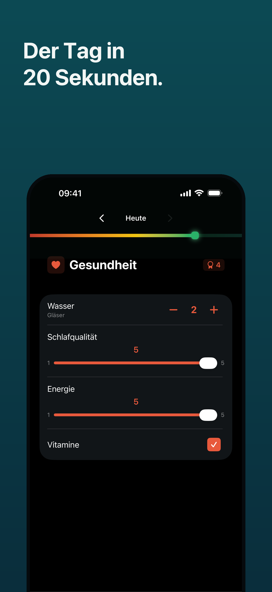
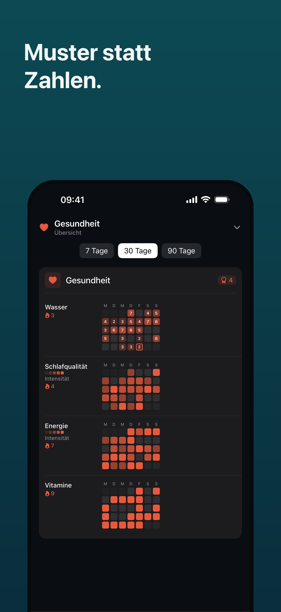
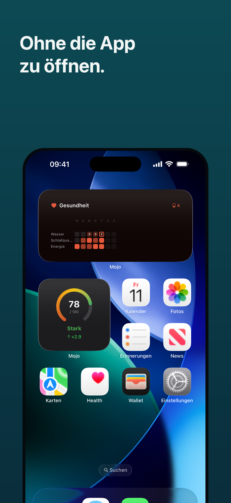

Mojo hilft dir, gute Gewohnheiten aufzubauen — ohne dass ein einzelner schlechter Tag alles zunichtemacht. Mojo helps you build good habits — without letting one bad day undo everything.
Die meisten Habit Tracker lassen dich bei null neu anfangen, sobald du einen Tag verpasst. Mojo nicht. Most habit trackers make you start over from zero the moment you miss a day. Mojo doesn't.

Dein Mojo Score zeigt dir auf einen Blick, wie viel Schwung gerade hinter deinen Gewohnheiten steckt. Verpasst du mal einen Tag, ist das kein Beinbruch — er sackt kurz, und sobald du weitermachst, bist du schnell wieder da, wo du warst. Kein Neustart, kein schlechtes Gewissen. Your Mojo Score shows at a glance how much momentum is behind your habits. Miss a day, and it's not a big deal — it dips briefly, and the moment you get back to it, you're quickly back where you were. No restarting, no guilt.

Schritte, Schlaf und Bewegung trägt Mojo automatisch für dich aus Apple Health ein. Statt nackter Zahlen siehst du in einem Wort, wie du gerade stehst: „Aktiv“, „Erholt“ oder Zeit für eine Pause. Steps, sleep and workouts get logged for you automatically from Apple Health. Instead of raw numbers, you see in one word how you're doing right now: "Active", "Rested", or time for a break.

Kleine Dinge, die im Alltag den Unterschied machen — ohne Konto, ohne Cloud. Small things that make the difference day to day — no account, no cloud.

Dein Tag in Sekunden erfasst. Ob Haken, Zahl oder Notiz — trag ein, was zählt, und mach weiter. Your day, logged in seconds. Whether it's a tick, a number or a note — log what matters and move on.

Fortschritt, den du siehst. Das Punkteraster zeigt dir Muster auf einen Blick — genau das, was dich motiviert dranzubleiben. Progress you can see. The dot grid shows patterns at a glance — exactly what keeps you motivated to continue.

Dranbleiben, ohne die App zu öffnen. Mit Widgets und Siri hakst du Gewohnheiten direkt vom Homescreen ab. Stay on track without opening the app. With widgets and Siri, check off habits right from your Home Screen.
Kein Konto, kein Server, keine Analyse-Dienste. Alles liegt auf deinem Gerät. Export als CSV, vollständiges Backup als JSON. Details dazu in der Datenschutzerklärung. No account, no server, no analytics services. Everything stays on your device. Export as CSV, full backup as JSON. Details in the Privacy Policy.
Danach entscheidest du. Ohne Zahlungsdaten während der Testphase. Then you decide. No payment details during the trial.